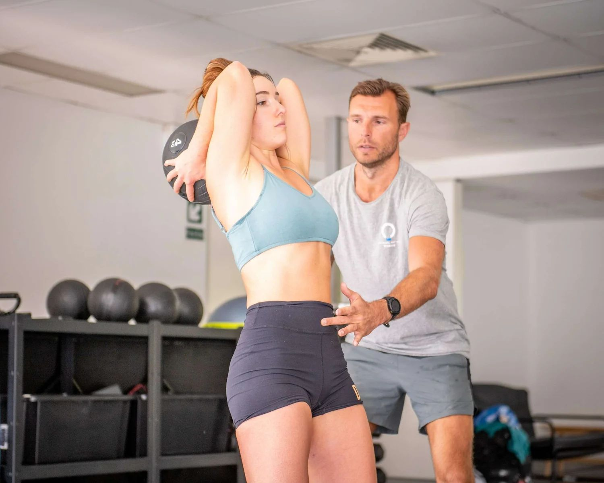

Ready to Start?
Book Your Assessment
90 minutes to understand exactly why your pain exists, which patterns drive it, and what needs to change.

Scapular Dyskinesis
Scapular winging occurs when muscles fail to integrate properly. We correct it through gait training -- not isolated shoulder exercises.
Written by Louis Ellery • Last reviewed: April 2026
Understanding the Problem
Winged scapulas occur when your shoulder blades don't sit flush against the rib cage. The underlying issue isn't weakness -- it's a muscle integration failure. The muscles responsible for scapular positioning aren't activating at the right time, in the right sequence, during movement.
Muscle integration means muscles getting into the correct position at the correct time during movement. The lats, levator scapulae, serratus anterior, and trapezius are all involved. When incorrect movement patterns develop -- often from years of poor training or sedentary habits -- certain muscles effectively switch off while others overcompensate.
Rib cage compression is another major contributor. Think of it like an airplane without enough space for the wings to land. If your rib cage is compressed and rotated, your scapulae have nowhere to sit properly, regardless of how strong your muscles are. You can do all the serratus anterior exercises you want -- if the rib cage is compressed, the scapulae will continue to wing.
This is why isolated shoulder exercises fail to produce lasting change. The problem isn't at the shoulder -- it's in how the entire upper body integrates during movement, and that starts with the rib cage, the spine, and how they coordinate during the gait cycle.
Our Method
We begin by analysing your gait to identify exactly which muscles aren't integrating and why. Gait -- standing, walking, and running -- is the primary human movement. It's the context in which your muscles are supposed to work together. Assessing you on a bench press or doing wall slides tells us very little about why your scapulae wing during real-world movement.
The treatment focuses on correcting spinal rotation during walking and running. When your thoracic spine rotates correctly, the muscles responsible for scapular positioning naturally re-engage. The serratus anterior, the lower traps, the lats -- they all have roles to play during contralateral rotation, and when that rotation is restored, they fire in the correct sequence.
We also address rib cage expansion. If your rib cage has been compressed for years, we need to create space for the scapulae to sit properly. This isn't done through stretching -- it's done through movement patterns that naturally decompress the thorax while training the muscles to maintain that position.
Integrating the body using the gait cycle as a guide consistently corrects winged scapulas -- not by targeting the scapulae directly, but by fixing the movement environment they operate in.
Case Study
Kynan came to us with scoliosis and visible scapular winging. His scoliosis had created an asymmetry in his thoracic spine that prevented even rotation -- one side was perpetually compressed while the other was over-extended. His scapulae had nowhere to sit properly, and the muscles responsible for positioning them had effectively switched off.
Through Functional Patterns training, we addressed the scoliosis and scapular winging simultaneously. By retraining how his spine rotated during walking and running, we created the conditions for his scapulae to naturally return to their correct position. The serratus anterior and back muscles began working together as they should.
The result: perfectly positioned shoulder blades, a measurably straighter spine, full range of motion in all directions, zero scapular winging, and zero back or neck pain. Not through isolated exercises, but through integrated movement.
Zero
Scapular Winging
Full
Range of Motion
Zero
Back/Neck Pain
Case Study
Vanessa trained weekly for 18 months. She presented with a complex set of issues: pain in the upper right leg, nerve pain through the neck and shoulders, tight pec minors pulling her shoulders forward, and excessive scapular winging in both retraction and protraction. Her previous practitioners had been unable to produce lasting change.
Her treatment was entirely gait-based. No squats. No deadlifts. No stretching. No isolated scapular exercises. Instead, we focused exclusively on how her body moved during walking and running, retraining the patterns that had caused her muscles to stop integrating. Her program was designed to restore contralateral rotation, decompress the rib cage, and re-establish proper force transfer from the ground up.
After 18 months, Vanessa has full range of motion without any scapular winging. Her nerve pain has largely resolved. Her scapular retraction muscles integrate naturally into everyday movement -- not just during exercise. The pec minor tightness that was pulling her shoulders forward corrected itself once the underlying movement patterns were restored.
18
Months Training
Zero
Winging Remaining
Full
ROM Restored
Case Study
Murphy trained with us for 18 months to resolve a persistent shoulder injury that was inhibiting his bowling. The injury had been lingering for years, and conventional treatments -- physio, cortisone, rest -- had provided only temporary relief before the pain returned every time he tried to bowl.
The approach required patience and trust. We stopped bowling entirely for 6 months to allow his structure to rebalance. During that time, we focused exclusively on the Functional Patterns fundamental four: standing, walking, running, and throwing mechanics. We rebuilt the foundation before returning to sport-specific demands. His gait needed to be corrected before his bowling action could be corrected.
The result: Murphy returned to bowling pain-free, faster, and with greater endurance than before his injury. He could bowl longer spells with less fatigue, and the shoulder that had plagued him for years was finally resolved.
"Coming back into bowling after that break there was a dramatic increase in comfort and overall ability to bowl. I could bowl longer spells with less fatigue, and the shoulder that had been causing me grief for years was finally pain-free. The improvement wasn't just physical -- I had genuine confidence in my body again."
-- Murphy, Verified Google Review
Evidence-Based
Peer-reviewed research supporting this treatment approach:
Common Questions
Winged scapulas occur when the muscles controlling the shoulder blade fail to stabilise it against the rib cage during movement. However, the root cause is rarely isolated weakness. It's typically a whole-body compensation involving poor rib cage positioning, dysfunctional breathing mechanics, and gait patterns that don't properly integrate the shoulder girdle with the rest of the body.
Yes. We've helped clients significantly reduce or resolve scapular winging through integrated movement correction. Because scapular control depends on rib cage position, thoracic spine mobility, and how the arms integrate during walking, the correction involves full-body gait retraining — not just isolated scapular exercises. Clients typically see progressive improvement over 3–6 months.
Isolated exercises like wall slides and band pull-aparts target the scapular muscles in static positions that don't transfer to how your body actually moves. Your scapula needs to move dynamically during walking, reaching, and arm swing. If the underlying movement pattern doesn't change, the winging returns. Lasting correction requires integrating scapular function into gait.
Ready to Start?
90 minutes to understand exactly why your pain exists, which patterns drive it, and what needs to change.